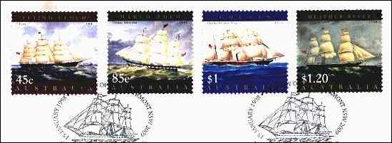
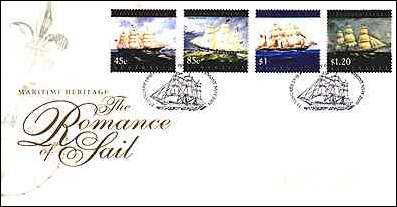
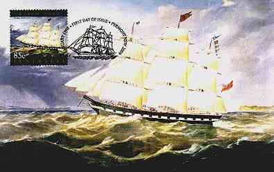
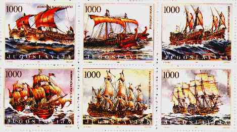
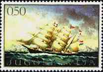
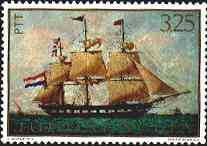
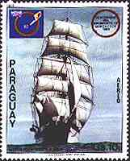
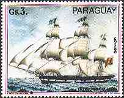
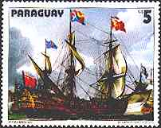
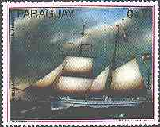

1988. AUSTRALIA. Maritime
Heritage - The Romance of Sail
Sailing ships played a
vital role in the transport of people and goods in Australia until the late nineteenth
century. In the 1850s the clippers reduced the duration of the voyage by many
weeks and introduced new standards of passenger comfort.

|

|

|
The stamps reproduce
ships from the following paintings:
- J. Scott. 'Flying Cloud' off
Whitby, 1871. Australian National Maritime Museum.
- Thomas Robertson. Marco Polo,
1859. The Trobe Collection, State Library of Victoria.
- Charles Dickson Gregory Chusan.
The Trobe Collection, State Library of Victoria.
- Artist unknown Heather Belle
c. 1860. Crowther Collection, State Library of Tasmania.
Stamps design: Brian Sadgrove,
Melbourne. FDC's design: Sandra Harman, Australia Post Graphic Design Studio.
|
OTHER SHIPS WORLDWIDE
 |
 |
 |
|

|

|

|

|
- Yugoslavia.
Sailing Ships of the Adriatic Sea: 1. The classic Greece
sailing ship. 2. Roman sailing ship. 3. Crusade sailing ship, 13th Century. 4. Nava of
Dubrovnik, 16th Century. 5. French sailing ship, 17th Century.
- Yugoslavia.
Dubrovnic Maritime Museum. Eber, by Vasa
Ivankovic. Madre
Mimbelli, by Antoine Poux.
- Paraguay.
Sailing Boat, by Gorch Fock. Cuxhaven, by J.
Bottiger-Altona. A Ship, by Jan van Beeck, 1679. Katharina von Blankenese,
by P. Holm.
Background: Harbour of Amsterdam, by
Ludolf Backhuyzen, Vienna, Austria.
|